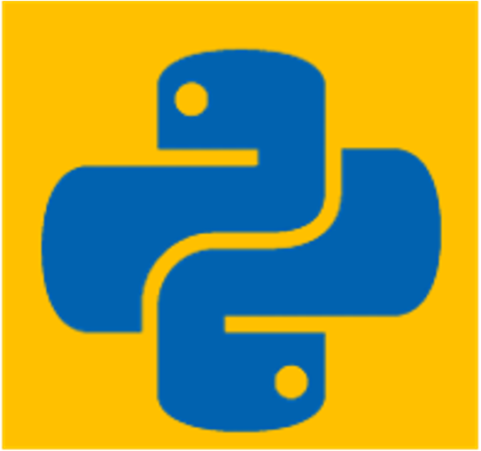
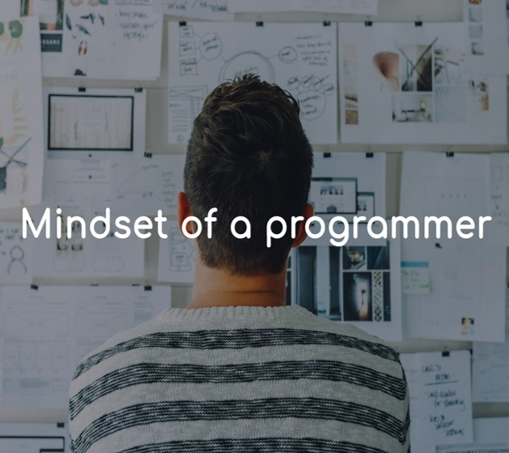
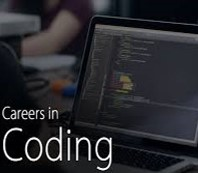
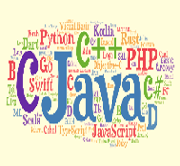

Data science hype is all over the world now. It has been around for quite a while but its relevance is still as high as ever. Why should you enter the field of Data Science “right now”? Well, there are several reasons. My favorite reason for entering the field of Data science is because it is very interesting. You can see things from a different angle and predict the future and take crucial decisions. Being a data scientist practically means you can solve really complex problems and break them down into very simple bits so everyone around you can understand and find ways around. This can be done when one keeps an open mind and reaches out to the creative person within. Besides this, Data science is a rapidly growing field because of the powerful impact it brings to companies. The demand for data scientists has skyrocketed over the last few years but the supply for good and quality Data scientists is increasing at a much slower pace. A research study by professionals at IBM predicted that by 2020, the demand for data science jobs and all other jobs under it will soar by 28%.
More Blogs

A Developer without A Community is A Ship without A Rudder
Most of us find it easy to live in our comfort zone when it comes to
our careers. We generally go to our workplace, interact with members of our team,
collaborate when needed, then come back home. There’s nothing wrong with this approach,
we can certainly get the job done - but we should do more when it comes to expanding our
career.
17 January, 2021 🕘 16 min read
Complete Learning Resources For PostgreSQL with Python in 2021
In this blog, I have discussed PostgreSQL RDBMS under a few headlines
like Why should you learn SQL, Why is PostgreSQL the best available option, A brief
history of PostgreSQL, Best Resource for learning, and Other Resources. In the end, I
also shared my timeline for learning PostgreSQL. There I have written about the best
learning resource about using PostgreSQL databases with the Psycopg2 library of
Python.
21 December, 2020 🕘 18 min read

How I Have Become A Self-Taught Python Developer in 3 Years?
What I always say is that “Programming is neither so difficult nor too
easy”. So, for learning programming, you don’t need too much merit but you need to have
much potential and passion for programming like, “Yes, I love programming and I will
learn that.” In this blog, I have described my timelines of learning Python programming.
I hope you will be benefitted too if you follow my route.
16 August, 2020 🕘 7 min read

Unexpected Lockdown Vacation and Programming MindSet
Lockdown has been a huge change for the vast majority of students at
schools and universities across the world, particularly for those whose schools have
closed early due to the current situation. My school was closed from March 16. It’s
completely surreal and dissatisfying. At that time, I was just left wondering, “What am
I supposed to do now?”
02 December, 2020 🕘 10 min read

প্রোগ্রামিং আসলে কি এবং প্রোগ্রামিং এর ক্যারিয়ার সমূহ
প্রোগ্রামিং এবং গণিত গভীরভাবে সম্পর্কযুক্ত। প্রোগ্রামিং-এর Basic ধারনা
দিয়ে অনেক কঠিন গাণিতিক সমস্যা সমাধান করা যায় এবং গণিতের উপর ভিত্তি করেই প্রোগ্রামিং এর
সূচনা হয়েছে। এ ব্লগপোস্টে তোমাদের প্রোগ্রামিং-এর সাথে পরিচয় হবে। তোমরা আরও জানতে পারবে
প্রোগ্রামিং এর বিভিন্ন ক্যারিয়ার সমূহ।
6 October, 2020 🕘 20 min read

প্রোগ্রামিং ল্যাঙ্গুয়েজ
কম্পিউটার বা মেশিন মানুষের ভাষা বুঝতে পারে না। যদিও আমরা কম্পিউটার
ব্যবহারের সময় বাংলা কিংবা ইংরেজিতে কাজ করি, কম্পিউটার মূলত অন্য একটি ভাষায় আমাদের
কাজগুলোকে প্রসেস করে। আর সে ভাষাটি হল বাইনারি। বাইনারি হলো 2 ভিত্তিক সংখ্যা ব্যবস্থা।
বাইনারিতে কেবল দুটি অংক 0 এবং 1 ব্যবহার করে প্রতিটি বিটকে প্রকাশ করা হয়।
12 October, 2020 🕘 16 min read